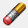

О редакторе
 [t]Редактор карт позволяет создавать полноценные сценарии для игры на любой вкус и цвет, или редактировать уже созданные, включая все стандартные карты, доступные игрокам. Редактор поставляется вместе с игрой и не требует отдельного скачивания и установки.
[t]Редактор карт позволяет создавать полноценные сценарии для игры на любой вкус и цвет, или редактировать уже созданные, включая все стандартные карты, доступные игрокам. Редактор поставляется вместе с игрой и не требует отдельного скачивания и установки.
[t]Редактор предоставляет много возможностей для создания карт, однако эти возможности могут быть расширены за счет дополнительного софта. Его можно найти в соответствующем разделе сайта. Кроме того, Вы можете скачать готовые карты, созданные нами, в следующем разделе.
[t]В этом разделе сайта Вы найдете информацию обо всех кнопках и панелях редактора, их предназначении, приемы создания карт с нуля и до финальных настроек, а также полезные идеи для своих творений. Этот гайд не является единственным верным способом создания карт, но он поможет понять примерную последовательность тем, кто создает сценарий впервые.
[t]Оглавление страницы расположено справа. Ниже представлено окно редактора при первом открытии:

Кнопки и панели редактора
[t]Итак, начнем рассматривать все панели и кнопки по порядку. Помимо основного меню, на панель вынесены кнопки быстрого доступа. Каждая из них дублирует аналогичное действие из меню. Ниже они будут отображены в начале описания каждого из действий:

 [t]1. Вкладка [s]Файл[/s] - Основные действия с файлом:
[t]1. Вкладка [s]Файл[/s] - Основные действия с файлом:
[t] [s]Новый[/s] - Создает шаблон новой карты. Перед созданием указывается версия, размер и наличие подземного мира. Также здесь можно сгенерировать случайную карту ([s]рис. 7[/s]).
[s]Новый[/s] - Создает шаблон новой карты. Перед созданием указывается версия, размер и наличие подземного мира. Также здесь можно сгенерировать случайную карту ([s]рис. 7[/s]).
[t] [s]Открыть[/s] - Открывает директорию, где хранятся все файлы карт, по умолчанию "[s]Папка с игрой/Maps[/s]". Далее можно открыть любой файл карты с расширением [s].h3m[/s].
[s]Открыть[/s] - Открывает директорию, где хранятся все файлы карт, по умолчанию "[s]Папка с игрой/Maps[/s]". Далее можно открыть любой файл карты с расширением [s].h3m[/s].
[t] [s]Сохранить[/s] - Пересохраняет текущую карту. Если шаблон карты до этого не был сохранен, то редактор предложит создать новый файл и назвать его.
[s]Сохранить[/s] - Пересохраняет текущую карту. Если шаблон карты до этого не был сохранен, то редактор предложит создать новый файл и назвать его.
[t]• [s]Сохранить как[/s] - Не пересохраняет исходный файл, а создает новый, которому также нужно присвоить имя.
[t]• [s]Экспортировать текст[/s] - Выгружает файл в формате [s].txt[/s], в котором собрана большая часть текстовой информации, например имя карты, описание, тексты событий, квестов и т.д.
[t]• [s]Импортировать текст[/s] - Совершает действие обратное экспорту - загружает из внешнего текстового файла спецификацию карты.
[t]• Список [s]Недавно открытых файлов[/s] - Отображает 4 последние открытые файла карт, для быстрого доступа к ним.
[t]• [s]Выход[/s] - Закрывает Редактор карт.
[t]2. Вкладка [s]Редактирование[/s] - Действия с объектами:
[t] [s]Отмена[/s] - Отменяет последнее совершенное действие, будь то установка, копирование, удаление объекта или манипуляции с ландшафтом.
[s]Отмена[/s] - Отменяет последнее совершенное действие, будь то установка, копирование, удаление объекта или манипуляции с ландшафтом.
[t] [s]Повтор[/s] - Возвращает последнее отмененное действие.
[s]Повтор[/s] - Возвращает последнее отмененное действие.
[t] [s]Вырезать[/s] - Вырезает выделенный объект в буфер обмена.
[t] [s]Копировать[/s] - Помещает выделенный объект в буфер обмена, не удаляя исходник.
[s]Копировать[/s] - Помещает выделенный объект в буфер обмена, не удаляя исходник.
[t] [s]Вставить[/s] - Вставляет объект из буфера обмена в верхний левый угол активного окна редактора.
[s]Вставить[/s] - Вставляет объект из буфера обмена в верхний левый угол активного окна редактора.
[t] [s]Удалить[/s] - Удаляет выбранный объект.
[t]• [s]Найти[/s] - Выводит список всех установленных на карте объектов. Позволяет быстро перемещаться между найденными объектами на карте ([s]рис. 8[/s]).
[t]• [s]Найти следующее[/s] - При выделении объекта позволяет переключиться к следующему объекту того же типа.
[t]• [s]Найти предыдущее[/s] - При выделении объекта позволяет переключиться к предыдущему объекту того же типа.
[t] [s]Свойства[/s] - Показывает свойства выделенного объекта и позволяет их настроить, если это возможно.
[s]Свойства[/s] - Показывает свойства выделенного объекта и позволяет их настроить, если это возможно.
 [t]3. Вкладка [s]Просмотр[/s] - Настройка отображения элементов на карте:
[t]3. Вкладка [s]Просмотр[/s] - Настройка отображения элементов на карте:
[t] [s]Ближе[/s] - Увеличивает масштаб активного окна карты. Есть 3 режима масштабирования.
[t] [s]Дальше[/s] - Уменьшает масштаб активного окна карты. Есть 3 режима масштабирования.
[t] [s]Подземный уровень[/s] - Переключает окно на редактирование [s]Подземного мира[/s]. Повторное нажатие возвращает редактирование [s]Поверхности[/s].
[t] [s]Сетка[/s] - Выводит на экран сетку, которая разделяет каждую клетку карты для удобства редактирования ([s]рис. 9[/s]).
[s]Сетка[/s] - Выводит на экран сетку, которая разделяет каждую клетку карты для удобства редактирования ([s]рис. 9[/s]).
[t] [s]Проходимость[/s] - Выводит на экран маску, которая закрашивает непроходимые участки карты красными квадратами, а клетки для взаимодействия героя - желтыми ([s]рис. 10[/s]).
[t]• [s]Анимация объектов[/s] - Включает или выключает анимацию у объектов на карте, как если бы карта была открыта в игре.
[t]• [s]Анимация рельефа[/s] - Включает или выключает анимацию рельефа, например волны на воде или потоки лавы.
[t]• [s]Панель инструментов[/s] - Переключает отображение панели инструментов, которая дублирует часть вышеупомянутых действий в виде кнопок для быстрого доступа.
[t]• [s]Панель режима[/s] - Переключает отображение кнопок, открывающих список тех или иных объектов в правой части экрана.
[t]• [s]Панель статуса[/s] - Переключает отображение поля информации в нижней части экрана. В этом поле прописан выбранный объект, активный игрок и размер карты.
[t]4. Вкладка [s]Инструменты[/s] - Переключение между окнами объектов разных типов:
[t] [s]Местность[/s] - Выпадающее подменю делится на две части: В первой выбирается размер кисти, а во второй тип почвы для размещения на карте.
[s]Местность[/s] - Выпадающее подменю делится на две части: В первой выбирается размер кисти, а во второй тип почвы для размещения на карте.
[t] [s]Реки[/s] - Включает режим создания рек определенного типа с кистью 1х1. Либо позволяет стирать реки с карты.
[s]Реки[/s] - Включает режим создания рек определенного типа с кистью 1х1. Либо позволяет стирать реки с карты.
[t] [s]Дороги[/s] - Включает режим создания дорог определенного типа с кистью 1х1. Либо позволяет стирать дороги с карты. При прокладке дороги имеют особую геометрию, плавно изгибаясь на поворотах, а также два участка дороги одного типа на близком расстоянии соединяются автоматически.
[s]Дороги[/s] - Включает режим создания дорог определенного типа с кистью 1х1. Либо позволяет стирать дороги с карты. При прокладке дороги имеют особую геометрию, плавно изгибаясь на поворотах, а также два участка дороги одного типа на близком расстоянии соединяются автоматически.
[t] [s]Стереть[/s] - Включает кисть выбранного размера, которые позволяет стирать объекты, дороги и реки с карты, но ничего не делает с почвой.
[t] [s]Препятствия[/s] - Включает кисть для создания случайных декоративных объектов в выбранной зоне. Сначала на карте синей маской отмечаются места, где нужно сгенерировать препятствия, затем после нажатия кнопки "[s]Разместить препятствия[/s]", они генерируются в зависимости от почвы под ними. Если после заливки не нажать "[s]Разместить препятствия[/s]" и переключиться на другой инструмент, то все выделение слетит.
[t] [s]Объекты[/s] - Позволяет переключаться между списками объектами разных типов, например сокровища, артефакты, герои и т.д. для дальнейшего их размещения на карте.
[s]Объекты[/s] - Позволяет переключаться между списками объектами разных типов, например сокровища, артефакты, герои и т.д. для дальнейшего их размещения на карте.
[t]• [s]Спецификации карты[/s] - Открывает окно продвинутых настроек карты, например ее описание, название в игре, особенности игроков и многое другое.
[t]• [s]Проверить карту[/s] - Выдает список недочетов и ошибок по карте, которые мог не заметить автор при создании или сделал их намеренно, например он показывает объекты, к которым нет доступа или указывает на остуствие описания и имени карты.
[t]• [s]Опции[/s] - Открывает окно со следующими настройками: Частота декоративных объектов при генерации карты, например трещины в земле или реки лавы; Включение или отключение автосохранения карты через определнный промежуток времени; Количество колонок в списке объектов.
[t]5. Вкладка [s]Игрок[/s] - Переключает активного игрока. Если выбран игрок, то все захватываемые объекты станут принадлежать этому игроку. Если хоть один объект на карте принадлежит игроку, то этот игрок автоматически становится активным и участвует в игре. Объекты, установленные под флагом какого-либо игрока, можно отредактировать не удаляя и поменять им владельца уже после установки. При этом установить [s]Героя[/s] без активного игрока нельзя.
[t]6. Вкладка [s]Справка[/s] - Раздел помощи при работе с редактором:
[t]• [s]Разделы помощи[/s] - Переключает на веб страницу, где расположены советы по редактору карт (не работает в HotA).
[t]• [s]О редакторе карт[/s] - Показывает название программы, версию и информацию о правах.
[t]Некоторые действия можно совершать при помощи горячих клавиш, например сохранение, копирование или вставку. Эти комбинации клавиш написаны напротив соответствующих действий в основном меню.

 [t]Сверху и слева от окна просмотра редактора расположены [s]Линейки[/s] ([s]рис. 11[/s]), единицой измерения в них является одна игровая клетка. Ориентируясь по ним, можно найти центр карты, а также легко сопоставлять объекты в [s]Подземелье[/s] и на [s]Поверхности[/s]. Черные ячейки линеек показывают, что на их пересечении в данный момент находится курсор.
[t]Сверху и слева от окна просмотра редактора расположены [s]Линейки[/s] ([s]рис. 11[/s]), единицой измерения в них является одна игровая клетка. Ориентируясь по ним, можно найти центр карты, а также легко сопоставлять объекты в [s]Подземелье[/s] и на [s]Поверхности[/s]. Черные ячейки линеек показывают, что на их пересечении в данный момент находится курсор.
[t]В правой части редактора располагается [s]Миникарта[/s] ([s]рис. 12[/s]). На ней схематично отображен рельеф текущей карты, препятствия и захватываемые объекты. Пунктирной линией показана область, которая попадает в активное окно и видна в данный момент.
[t]По сути миникарта в игре будет выглядеть точно также, как и в редакторе, только изначально будет скрыта [s]Террой инкогнито[/s]. Когда игрок захватывает объект, то на миникарте он окрашивается в цвет этого игрока. Из-за того, что миникарта имеет фиксированное разрешение, в больших картах очень трудно по ней ориентироваться.
[t]Под миникартой располагается окно [s]Активного инструмента[/s] ([s]рис. 13[/s]). В зависимости от того, какой инструмент выбран в данный момент, вид этого окна будет меняться. Например, если активен [s]Инструмент местности[/s], то в данном окне можно будет выбрать тип создаваемой местности и размер кисти, а если выбран, скажем, инструмент [s]Артефакты[/s], то автору будет предложен список всех доступных в игре [s]Артефактов[/s] для их расположения на карте.
[t]В случае с игровыми объектами, их нельзя просто выбрать из списка и размещать, каждый объект для установки нужно перетащить на карту с зажатой кнопкой мыши.
[t][s]Почва[/s], [s]вода[/s], [s]реки[/s], и [s]дороги[/s] наносятся на карту с помощью кисти, для этого стоит лишь выбрать размер этой кисти и наносить рельеф на карту с помощью [s]ЛКМ[/s].
[t][s]Инструмент препятствий[/s] работает следующим образом: Сначала на карте кистью отмечаются места, где в последующем сгенерируются препятствия в зависимости от почвы под ними. Кисть может быть выбрана [s]Жесткая[/s] или [s]Размытая[/s], первая заполняет препятствиями всю выделенную область, вторая - частично заполняет область по периметру, делая рваный рельеф. Когда Вы используете кисть, карта закрашивается синим цветом, именно в этих местах после нажатия на кнопку [s]Разместить препятствия[/s] появятся случайные декоративные объекты. Кроме обычной кисти можно также использовать выделение для заливки больших площадей.

Работа с почвой и рельефом
[t]Перед тем, как приступать к первым штрихам, стоит определиться со следующими моментами:
[t]1. Решите, какого размера будет карта, если Вы начнете создание, то изменить размер в процессе будет нельзя. Учитывайте, что самые динамичные и интересные карты обычно средних размеров. Исходя из размера будет понятно, какое количество игроков будет целесообразно разместить.
[t]2. Определитесь, каков будет сюжет и ориентированность карты: Если карта предназначена для нескольких игроков или будет возможен выбор, за кого начать, то будет разумно отдать каждому из игроков примерно равное количество территории.
[t]3. При создании новой карты, можно сразу же выключить [s]Подземный[/s] уровень, если Вы не планируете его делать, тогда в игре кнопка переключения [s]Подземелья[/s] и [s]Поверхности[/s] будет неактивна. Это необязательно, так как [s]Подземелье[/s] можно просто оставить пустым.
[t]4. Будет не лишним заранее знать условия победы, так как от этого напрямую будет зависеть расположение тех или иных объектов и их количество.
[t]Итак, мы создали шаблон новой карты  , выбрав ее размер и установив наличие / отсутствие [s]Подземелья[/s]. Для тех, кто не готов особо заморачиваться с созданием карты, есть возможность сгенерировать случайную, а затем просто внести в нее свои коррективы, но в статье будет описан подробный процесс создания.
, выбрав ее размер и установив наличие / отсутствие [s]Подземелья[/s]. Для тех, кто не готов особо заморачиваться с созданием карты, есть возможность сгенерировать случайную, а затем просто внести в нее свои коррективы, но в статье будет описан подробный процесс создания.
 [t]Изначально мы видим карту заданных размеров полностью заполненную [s]Водой[/s], как на самом первом скриншоте. Начнем с создания земли, для этого выберем [s]Инструмент местности[/s]
[t]Изначально мы видим карту заданных размеров полностью заполненную [s]Водой[/s], как на самом первом скриншоте. Начнем с создания земли, для этого выберем [s]Инструмент местности[/s]  и, задав необходимые параметры кисти, будем рисовать поверх [s]Воды[/s] почву ([s]рис. 14[/s]).
и, задав необходимые параметры кисти, будем рисовать поверх [s]Воды[/s] почву ([s]рис. 14[/s]).
[t]Учитывайте, что по [s]Воде[/s] герои могут перемещаться только на [s]Лодках[/s] или если они имеют специальные заклинания и артефакты. По типу почвы [s]Скала[/s] передвигаться нельзя в принципе никаким доступным способом, по умолчанию таким типом почвы залито все [s]Подземелье[/s]. Вообще этот тип почвы было бы логично назвать [s]Пустотой[/s] или [s]Пропастью[/s]. Вся остальная земля пригодна для передвижения, однако создает штрафы передвижения, которые описаны в этой статье.
[t]Разные типы почвы стыкуются своеобразным способом и между ними прорисовывается полоска [s]Земли[/s] или [s]Песка[/s], а также при соприкосновении участки могут менять свою форму. К тому же нельзя создать отдельный участок земли размером [s]1х1 клетку[/s], кроме краев карты, минимальный размер учатска [s]2х2 клетки[/s].
[t]Если Вы заранее будете устанавливать фиксированные [s]Города[/s] игрокам, есть смысл сделать на их территории [s]Родную землю[/s]. Что это значит и какому [s]Городу[/s] какая почва относится можно прочитать в данной статье.
[t]Когда есть первоначальные черты карты и нарисована почва, нужно определиться с местами старта игроков, чтобы выделить им достаточную территорию в дальнейшем. Чтобы задать игрока, переходим во вкладку [s]Игрок[/s] на панели главного меню и там выбираем любого из восьми. Номера игроков задают порядок хода, чем меньше номер, тем раньше игрок ходит (человек всегда ходит перед ИИ). Каждому номеру игрока соответствует свой цвет.
[t]Этот пункт скорее относится к главе Размещение объектов, однако стоит выполнить его заранее. Выбрав игрока, перейдем к списку [s]Городов[/s] в окне объектов , затем перетащим нужный [s]Город[/s] на карту. Здесь есть вариант выбрать конкретный [s]Город[/s] или установить [s]Случайный[/s], во втором случае перед стартом сценария игрок сможет выбрать себе [s]Город[/s] из доступных ([s]рис. 15[/s]).
[t]Не стоит размещать игроков слишком близко друг к другу, если конечно это не особая задумка автора, иначе игра закончится толком не начавшись.
[t]Имейте ввиду, что пока выбран активный игрок, все захватываемые объекты, которые Вы разместите, будут принадлежать ему и не будут нейтральными. Вы сразу увидите это на [s]Миникарте[/s], объекты окрасятся в цвет игрока.
[t]В целом почву всегда можно будет заменить в процессе создания карты, даже когда на ней будут размещены объекты, исключением являются [s]Вода[/s] и [s]Скала[/s] (пустота), если расположить их под наземными объектами, то такие объекты будут уничтожены.
[t]Далее займемся расстановкой препятствий и декоративных объектов. Способов их создания два: Первый - размещать объекты путем перетаскивания из списка; Второй - использовать генератор препятствий . Второй способ гораздо быстрее и удобнее, но сгенерированные объекты не выглядят так же лаконично, как если бы были устновлены вручную. Если Вы не эстет, то второй способ определенно для Вас.
 [t]Для каждого типа почвы вынесена отдельная вкладка объектов , которые хорошо стилистически сочетаются с почвой под ними. В нашем примере ([s]рис. 16[/s]) мы расставляем препятствия на [s]Камнях[/s], поэтому логично будет выбрать вкладку [s]Объекты каменистой местности[/s]
[t]Для каждого типа почвы вынесена отдельная вкладка объектов , которые хорошо стилистически сочетаются с почвой под ними. В нашем примере ([s]рис. 16[/s]) мы расставляем препятствия на [s]Камнях[/s], поэтому логично будет выбрать вкладку [s]Объекты каменистой местности[/s]  . По сути не имеет значения, какие объекты на какой земле размещать, их можно смешивать как Вам только заблагорассудится, все ограничивается только фантазией автора, кроме того объекты можно ставить как бы внахлест, когда один объект перекрывает другой. Таким образом получаются приятные глазу ландшафты.
. По сути не имеет значения, какие объекты на какой земле размещать, их можно смешивать как Вам только заблагорассудится, все ограничивается только фантазией автора, кроме того объекты можно ставить как бы внахлест, когда один объект перекрывает другой. Таким образом получаются приятные глазу ландшафты.
[t]Не все объекты, предназначенные для суши, могут быть размещены на [s]Воде[/s], ровно как и наоборот, водные объекты не установятся на сушу. На типе почвы [s]Скала[/s] (пустота) вообще нельзя разместить никакие объекты.
[t]При расстановке препятствий следите за двумя вещами: Необходимо оставлять свободное место для размещения в последствии игровых объектов, впрочем препятствия можно без труда удалить; И оставляйте проходы для героев, иногда можно случайно перекрыть ключевой проход и сделать карту неиграбельной. Если же Вы намеренно делаете замкнутые пространства, то позаботьтесь о наличии [s]Телепортов[/s]. Чтобы проверить проходимость карты, можно воспользоваться инструментом [s]Проходимость[/s] , он выделит непроходимые участки карты красными клетками.
 [t]Теперь можно немного оживить ландшафт и добавить на него [s]Дороги[/s] и [s]Реки[/s] ([s]рис. 17[/s]). [s]Реки[/s] никак не влияют на игровой процесс, они служат исключительно декорацией, чего не скажешь о [s]Дорогах[/s]. Дороги в игре созданы для снижения штрафа передвижения, подробнее о том какие типы [s]Дорог[/s] и как влияют на очки передвижения можно прочитать в этой статье.
[t]Теперь можно немного оживить ландшафт и добавить на него [s]Дороги[/s] и [s]Реки[/s] ([s]рис. 17[/s]). [s]Реки[/s] никак не влияют на игровой процесс, они служат исключительно декорацией, чего не скажешь о [s]Дорогах[/s]. Дороги в игре созданы для снижения штрафа передвижения, подробнее о том какие типы [s]Дорог[/s] и как влияют на очки передвижения можно прочитать в этой статье.
[t]Поскольку разные типы земли создают разные штрафы передвижения, то с помощью [s]Дорог[/s] можно слегка нивелировать неравные условия разных игроков. Так например, если игрок начинает свою игру на [s]Болоте[/s], то передвижение по нему станет настоящей пыткой, в то время как игрок, стартовавший на [s]Траве[/s], сможет перемещаться почти без штрафов. В таком случае будет целесообразно разместить [s]Мощеную дорогу[/s] на территории [s]Болот[/s], а [s]Грязевую дорогу[/s] на [s]Траве[/s].
[t]Если посмотреть на скриншот, то видно, что [s]Дорога[/s] как бы идет между клетками, а не ровно по их центру. О том, какие клетки на [s]Дорогах[/s] дают бонус передвижения, а какие нет, можно прочитать здесь.
[t]Есть два типа декоративных объектов, которые связываются с [s]Реками[/s] и [s]Дорогами[/s] - это [s]Дельты рек[/s] и [s]Мосты[/s]. Эти объекты не являются препятствиями и по ним можно спокойно перемещаться, при том они никак не влияют на штраф передвижения. С помощью [s]Дельты[/s] можно сделать [s]Реку[/s], красиво впадающую в море, а [s]Мост[/s] можно использовать на пересечении [s]Реки[/s] и [s]Дороги[/s]. Эти объекты находятся в разных вкладках, связанных с типами почвы. Чтобы при передвижении по [s]Мосту[/s] действовало снижение штрафа, нужно разместить под ним [s]Дорогу[/s].
[t]Таким образом мы сделали рельеф карты, оградили территорию для каждого игрока, оставили места для размещения игровых объектов и сокровищ. Есть вариант пойти обратным путем - сначала расставить все необходимые объекты, а затем вокруг них создавать препятствия и декорации. Оба варианта правильные и с чего начать решать только Вам.
Размещение объектов
[t]Все объекты в редакторе можно условно разделить на 5 категорий:
[t]1. [s]Захватываемые[/s] и [s]Посещаемые[/s] объекты;
[t]2. [s]Подбираемые[/s] объекты, например такие как [s]Ресурсы[/s], [s]Артефакты[/s] или [s]Сундуки с сокровищами[/s];
[t]3. [s]Герои[/s] и [s]Существа[/s] - основные боевые единицы в игре;
[t]4. [s]Декоративные[/s] объекты, с которыми мы познакомились в статье Работа с почвой и рельефом;
[t]5. Особый тип объектов - [s]События[/s], которые не видны игрокам, но срабатывают при контакте с ними.
[t]В игре представлено более сотни разных объектов с уникальными свойствами. Те, кто много играл в [s]HoMM III[/s] наверняка знают все особенности объектов наизусть, а тем, кто только знакомится с ними, поможет страница Объектов. На этой странице все игровые объекты разбиты по группам и каждый из них имеет подробное детальное описание.
[t]В нашем руководстве мы будем размещать сначала статичные объекты, затем подбираемые и лишь в конце расставим охрану.
[t][s]• Статичные объекты[/s]
 [t]Помимо общих объектов
[t]Помимо общих объектов  , в тех списках, где мы брали декоративные объекты для каждого типа почвы , находятся и интерактивные объекты, если пролистать до конца. Свойства этих объектов могут дублироваться от вкладки ко вкладке, но все они будут иметь свой внешний вид. Например [s]Золотая шахта[/s] может быть вытесана в песчанике, может быть покрыта снегом или быть частью вулканических скал, хотя ее функция не изменится, она всегда будет приносить дополнительно [s]1000 золотых[/s] в день. Таким образом интерактивные объекты как и декоративные можно сделать красивой и лаконичной частью рельефа.
, в тех списках, где мы брали декоративные объекты для каждого типа почвы , находятся и интерактивные объекты, если пролистать до конца. Свойства этих объектов могут дублироваться от вкладки ко вкладке, но все они будут иметь свой внешний вид. Например [s]Золотая шахта[/s] может быть вытесана в песчанике, может быть покрыта снегом или быть частью вулканических скал, хотя ее функция не изменится, она всегда будет приносить дополнительно [s]1000 золотых[/s] в день. Таким образом интерактивные объекты как и декоративные можно сделать красивой и лаконичной частью рельефа.
[t]Как известно, основной для развития, отстройки [s]Городов[/s] и покупки армии являются [s]Ресурсы[/s], поэтому начнем расстановку объектов с тех, которые их генерируют. [s]Города[/s] являются основным источником [s]Золота[/s], поэтому размещать [s]Золотые шахты[/s] у старта нет необходимости, а вот [s]Древесина[/s] и [s]Руда[/s] являются ключевыми ресурсами и нужны абсолютно всем в больших количествах, поэтому почти во всех картах Вы можете найти [s]Лесопилку[/s] и [s]Рудник[/s] недалеко от родного города.
[t][s]Шахты[/s] захватываются игроком и приносят постоянный ежедневный доход, но кроме них существует большое количество объектов, которые приносят ресурсы единоразово или раз в неделю при посещении, например [s]Мельницы[/s], [s]Мистические сады[/s], [s]Склады[/s] и т.д. Не стоит сильно увлекаться расстановкой таких объектов, так как при изобилии ресурсов у игроков пропадет потребность в торговле и накоплениях, а это важные аспекты игры.
[t]Игрок может разом получить довольно большое количество [s]Ресурсов[/s], если сможет разграбить [s]Сокровищницу[/s]. Такие объекты как правило охраняются эквивалентно тому, что герой в итоге получит в награду. Помимо [s]Ресурсов[/s] сокровищницы могут содержать [s]Артефакты[/s], [s]Заклинания[/s] и даже [s]Существ[/s].
 [t]Следующие на очереди [s]Генераторы существ[/s]. По большому счету [s]Города[/s] могут обеспечить героев армией, но пара лишних генераторов около замка будут не лишними, кроме того, есть нейтральные существа, которых невозможно купить ни в одном городе, в таком случае помогут только внешние генераторы. Захват всех генераторов существ на карте может быть условием победы, если того пожелает автор карты. К генераторам также можно отнести такие объекты, как [s]Фабрика военное техники[/s] и [s]Пушечный двор[/s], в них герой может приобретать [s]Боевые машины[/s], что тоже по сути армия.
[t]Следующие на очереди [s]Генераторы существ[/s]. По большому счету [s]Города[/s] могут обеспечить героев армией, но пара лишних генераторов около замка будут не лишними, кроме того, есть нейтральные существа, которых невозможно купить ни в одном городе, в таком случае помогут только внешние генераторы. Захват всех генераторов существ на карте может быть условием победы, если того пожелает автор карты. К генераторам также можно отнести такие объекты, как [s]Фабрика военное техники[/s] и [s]Пушечный двор[/s], в них герой может приобретать [s]Боевые машины[/s], что тоже по сути армия.
[t]Редактор позволяет устанавливать случайные генераторы. Например автор может поставить [s]Случайное жилище 5 уровня[/s], тогда при старте игры оно может стать генератором любого из существ [s]5 уровня[/s]. Также генераторы можно привязать к родному [s]Городу[/s] игрока, таким образом какой бы город он ни выбрал, генераторы подстроятся под него.
[t][s]Генераторы[/s] и [s]Города[/s] не являются единственным источником армии, есть, к примеру, [s]Лагерь беженцев[/s], который каждую неделю генерирует новых случайных существ, или [s]Сокровищницы[/s], о которых говорилось ранее, где после победы над охраной игрок получает сильных существ в свою армию.
[t]Далее следует позаботиться о прокачке [s]Героев[/s]. Герой с большой армией, но без подходящих навыков и высоких параметров ничего не стоит, поэтому пора расставить объекты, которые помогут усилить персонажа. Таких объектов в игре огромное множество, одни дают [s]Опыт[/s], другие - новые [s]Заклинания[/s], третьи - [s]Первичные навыки[/s] и т.д. Пойдем по порядку:
 [t]Объекты, которые увеличивают [s]Боевой дух[/s] и [s]Удачу[/s], например [s]Идол удачи[/s], [s]Храм[/s] или [s]Грибное кольцо фей[/s], таких объектов можно ставить на карту довольно много, так как они не внесут сильный дисбаланс и не сделают из [s]Героев[/s] машины для убийств, сколько их не посети. Тем не менее нужно помнить, что многие объекты ограничены по количеству на карте и если Вы создаете огромную карту, то посмотрите на этой странице максимально возможное количество объектов такого типа.
[t]Объекты, которые увеличивают [s]Боевой дух[/s] и [s]Удачу[/s], например [s]Идол удачи[/s], [s]Храм[/s] или [s]Грибное кольцо фей[/s], таких объектов можно ставить на карту довольно много, так как они не внесут сильный дисбаланс и не сделают из [s]Героев[/s] машины для убийств, сколько их не посети. Тем не менее нужно помнить, что многие объекты ограничены по количеству на карте и если Вы создаете огромную карту, то посмотрите на этой странице максимально возможное количество объектов такого типа.
[t]Чтобы герои могли обзавестись новыми [s]Заклинаниями[/s], существуют [s]Святыни[/s] и они разделяются на 4 вида, каждый из которых дает [s]Заклинание[/s] соответствующего уровня от 1 до 4. [s]Святыни[/s] с высоким уровнем заклинаний есть смысл ставить дальше от старта игроков и обеспечивать сильной охраной. Если дважды кликнуть на [s]Святыне[/s], то можно принудительно настроить [s]Заклинание[/s], которое она будет хранить, в противном случае будет выбрано случайное из разрешенных на карте.
[t]Говоря о [s]Заклинаниях[/s], чтобы их использовать, героям необходима [s]Мана[/s], а ее в свою очередь надо где-то пополнять. Один из способов ее пополнения - это ожидание в [s]Городе[/s], где построена [s]Гильдия магов[/s], но города редко находятся под боком. Для удобства есть несколько объектов, позволяющих быстро восполнить запас [s]Маны[/s] прямо на ходу, например [s]Колодец[/s] или [s]Магический ручей[/s]. Обязательно установите на карте хотя бы несколько таких объектов.
[t][s]Первичные навыки[/s] героев - это основной показатель их силы, поэтому объекты, увеличивающие эти навыки, нужно расставлять с умом и равномерно, потому что даже с незначительным перевесом в [s]Первичных навыках[/s] герой становится грозным противником перед оппонентом, а с большим перевесом и вовсе станет непобедим. К таким объектам относятся например [s]Арена[/s], [s]Колизей магов[/s], которые увеличивают характеристики сразу аж на [s]2 ед.[/s], есть объекты попроще - [s]Башня марлетто[/s] или [s]Лагерь наемников[/s]. Все эти объекты должны хорошо охраняться, так как являются основной целью игроков.
[t]И наконец [s]Вторичные навыки[/s] - они полностью определяют путь развития персонажа, будет он магом, воином или разведчиком, решат именно они. Главный объект, относящийся ко [s]Вторичным навыкам[/s] - это [s]Университет[/s], он позволяет не просто получить какой-то навык, а даже изучить целый спектр и выбрать те, которые нужны, правда не бесплатно. Так как количество навыков у кажого героя ограничено, то в поздних стадиях игры такие объекты становятся бесполезны, посему есть смысл расставлять их ближе к родным городам игроков. Навык, который даст герою [s]Хижина ведьмы[/s], может быть настроен вручную, если зайти в ее настройки через двойной клик.
[t]К отдельному типу объектов можно отнести те, что связаны с торговлей и обменом, причем [s]Рынки[/s] позволяют менять не только [s]Ресурс[/s] на [s]Ресурс[/s], но также продавать [s]Существ[/s] и [s]Артефакты[/s] в зависимости от типа. Обычный [s]Торговый пост[/s] - это тот же самый [s]Рынок[/s], который располагается в каждом городе, но есть один нюанс: Чем больше [s]Городов[/s] с [s]Рынками[/s] имеет игрок, тем выгоднее для него курс обмена, а на [s]Торговом посту[/s] можно обменивать ресурсы с эффективностью [s]5 Городов[/s] уже с самого начала. Благодаря этому [s]Торговый пост[/s] становится очень полезен на первых порах и имеет смысл размещать его в стартовой зоне. [s]Черный рынок[/s], позволяющий покупать [s]Артефакты[/s], наоборот актуален в поздней стадии игры, так как артефакты имеет очень высокую цену для старта и игроки покупают их крайне редко.
[t]Почти ни одна карта не обходится без таких объектов, как [s]Телепорты[/s] и [s]Подземные врата[/s] (если есть [s]Подземелье[/s]). Телепорты позволяют быстро переместиться из одной точки карты в другую, благодаря им игра становится более динамичная и непредсказуемая. Они могут располагаться как на суше, так и на воде. Кроме обычных [s]Двухсторонних порталов[/s] в игре есть особые вариации: Например [s]Односторонний монолит[/s], который позволяет путешествовать только в одну сторону, но не обратно; Или [s]Водоворот[/s], кроме того, что он переносит к любому другому [s]Водовороту[/s] на карте, герой при этом теряет часть своей армии. [s]Подземные врата[/s] переносят к ближайшим таким же вратам в другом мире, поэтому, если Вы поставили их на [s]Поверхности[/s], не забудьте и про [s]Подземелье[/s].
[t]Пограничной зоной служит переход между сушей и водой. Герой не может перемещаться по воде на лошади, что логично, поэтому ему нужна [s]Лодка[/s]. Способов ее получить два: Первый - отыскать заклинание [s]Вызвать корабль[/s]; Второй - установить на карте [s]Верфь[/s]. [s]Верфь[/s] позволяет за [s]Золото[/s] и [s]Древесину[/s] строить корабли, поэтому, если Вы создаете карту с водой, то не забудьте про установку этих объектов. При этом имейте ввиду, что [s]Лодка[/s] появляется на соседней с [s]Верфем[/s] клетке воды и к ней должен быть доступ, иначе герой не сможет отчалить.
[t]Автор может разместить [s]Лодки[/s] в любом месте карты на воде, но не стоит полагаться только на них, так как существует заклинание [s]Затопить корабль[/s] и перемещение по воде станет невозможным, если нет альтернативных способов создать корабль.
[t]В классическом виде карты разделены на зоны: Стартовая территория каждого игрока, нейтральная территория и зона с сильной охраной и ценным лутом. Этих зон может быть огромное множество или не быть совсем. Как правило две зоны соединяются одним или несколькими узкими проходами, это может быть как обычная тропа, так и [s]Телепорт[/s] или [s]Врата подземного мира[/s].
[t]Так или иначе переход между зонами как правило охраняется и тут есть несколько вариантов ([s]рис. 19[/s]):
[t]1. Самый просто вариант - Отряд [s]Существ[/s] высокого уровня;
[t]2. [s]Гарнизон[/s]. Он представляет из себя ворота, пройти через которые можно лишь победив охрану. Суть [s]Гарнизона[/s] заключается в том, что после его захвата игрок может оставлять там свою армию и противнику вновь предстоит с ней сразиться, а все союзники смогут беспрепятственно через него ходить;
[t]3. Еще один вариант защиты проходов - это [s]Стражи границ[/s] и [s]Пограничные ворота[/s]. Чтобы преодолеть эти препятствия, игроку нужно найти на карте и посетить [s]Палатку ключника[/s] того же цвета, что и страж с воротами. После ее посещения игрок сможет открыть [s]Страж прохода[/s] или свободно проходить через [s]Пограничные ворота[/s]. Обычно таким образом закрыты зоны с очень ценными объектами, так как поиск [s]Палаток ключника[/s] занятие нетривиальное;
[t]4. Крайне редкий, но все же встречающийся вариант - охрана через [s]Событие[/s]. Игрок не видит никакой угрозы, лишь узкий проход, но когда наступает на клетку с [s]Событием[/s], начинается бой. Подробнее о настройке [s]Событий[/s] будет написано в конце этой главы.
 [t]Есть отдельный вид объектов, которые меняют почву, по которой перемещается герой или где проходит сражение. Такие объекты представляют из себя поля разной площади, которые располагаются подо всеми остальными объектами. Помимо того, что эта земля визуально меняет карту, она также дает интересные эффекты: Например, когда битва проходит на [s]Зловещем тумане[/s], существа со [s]Злым[/s] мировоззрением получают бонус к [s]Боевому духу[/s], а с [s]Добрым[/s] - наоборот; Есть типы земли, которые позволяют колдовать походные и боевые [s]Заклинания[/s] на [s]Экспертном[/s] уровне вне зависимости от прокачки персонажа и т.д. Узнайте о них подробнее на странице Объектов.
[t]Есть отдельный вид объектов, которые меняют почву, по которой перемещается герой или где проходит сражение. Такие объекты представляют из себя поля разной площади, которые располагаются подо всеми остальными объектами. Помимо того, что эта земля визуально меняет карту, она также дает интересные эффекты: Например, когда битва проходит на [s]Зловещем тумане[/s], существа со [s]Злым[/s] мировоззрением получают бонус к [s]Боевому духу[/s], а с [s]Добрым[/s] - наоборот; Есть типы земли, которые позволяют колдовать походные и боевые [s]Заклинания[/s] на [s]Экспертном[/s] уровне вне зависимости от прокачки персонажа и т.д. Узнайте о них подробнее на странице Объектов.
 [t]В игре есть система [s]Заданий[/s]. Герой, посетив [s]Хижину провидца[/s], получает квест, затем выполняет его, возвращается назад и получает заслуженную награду. Также задание может содержаться в [s]Страже прохода[/s], в этом случае его выполнение откроет герою путь. Если Вы генерируете случайную карту, то задания и награда в хижинах будут заданы автоматически, но если устанавливаете сами, то необходимо вручную задать квест и награду за него, иначе она будет пустовать.
[t]В игре есть система [s]Заданий[/s]. Герой, посетив [s]Хижину провидца[/s], получает квест, затем выполняет его, возвращается назад и получает заслуженную награду. Также задание может содержаться в [s]Страже прохода[/s], в этом случае его выполнение откроет герою путь. Если Вы генерируете случайную карту, то задания и награда в хижинах будут заданы автоматически, но если устанавливаете сами, то необходимо вручную задать квест и награду за него, иначе она будет пустовать.
[t]Спектр заданий достаточно широк ([s]рис. 20[/s]), они могут заключаться в наборе [s]Уровня[/s] героя, поиске [s]Ресурсов[/s], [s]Артефактов[/s], убийстве [s]Монстров[/s] и т.д. Квесты могут быть одноразовыми или повторяющимися, могут быть ограничены по времени выполнения в зависимости от настроек, а также содержать текст с подсказками либо сгенерированный автоматически, либо заданный автором.
[t]Не стоит устанавливать очень много [s]Хижин провидца[/s] на карте, потому что от большого количества заданий игроки начинают путаться, особенно если эти задания сложные и долгие. Как правило в таких ситуациях про них просто забывают или игнорируют. Есть смысл устанавливать простые быстрые задания в стартовой зоне игроков или же задания, без выполнения которых невозможна победа либо проход в определенную зону. В сюжетных картах на заданиях строится основная часть прохождения и можно выстраивать целые цепочки последовательных квестов.
[t]Если Вы устанавливаете задание по поиску [s]Артефакта[/s], то позаботьтесь о том, чтобы этот артефакт лежал в определенном месте, иначе игроки имеют шанс никогда не найти его.
[t]Отдельного упоминания стоят [s]Обелиски[/s], которые служат ключом к поиску [s]Грааля[/s] - одного из важнейших артефактов игры. На карте можно расположить до [s]48 Обелисков[/s], каждый из которых будет открывать часть [s]Карты загадки[/s] эквивалетно их количеству. Когда карта будет открыта, игрок сможет выкопать [s]Грааль[/s]. Подробнее про [s]Грааль[/s] и его раскопки можно почитать в этой статье.
[t]В плане расстановки имеет смысл расположить [s]Обелиски[/s] равномерно по всей карте, чтобы [s]Карта загадки[/s] каждого из игроков открывалась примерно равными темпами. Ко всему прочему сам [s]Грааль[/s] можно разместить вручную в любой допустимой точке карты (находится он во вкладке [s]Артефакты[/s] ), но делать это не всегда стоит, так как при повторном прохождении карты игрок уже будет знать где копать, а при случайной генерации будет оставаться загадка.
[t]В игре есть еще множество объектов с уникальными свойствами, такие, как [s]Картографы[/s], которые могут открыть всю карту за определенную сумму денег, [s]Тюрьмы[/s], где можно вызволить [s]Героя[/s] и тот примкнет к Вам, [s]Гильдии воров[/s], в которых можно узнать некоторые данные о противниках и много чего еще. Здесь Вы можете пробежаться по списку объектов и посмотреть, что они делают, прежде чем разместить их на карте.
[t][s]• Подбираемые объекты[/s]
[t]В игре представлено небольшое количество подбираемых объектов, поэтому мы пройдем по всем:
 [t]Самый распространенный подбираемый объект в игре - это [s]Ресурс[/s]
[t]Самый распространенный подбираемый объект в игре - это [s]Ресурс[/s]  . Они, как правило, располагаются на карте в гораздо больших количествах, чем какие-либо другие объекты. Всего существует 7 видов ресурсов: [s]Древесина[/s], [s]Руда[/s], [s]Сера[/s], [s]Ртуть[/s], [s]Кристаллы[/s], [s]Драгоценные камни[/s] и [s]Золото[/s]. Каждый из них автор может разместить на карте в виде кучки и герой, подобравший ее, получит некоторое количество данного ресурса. Это количество может быть задано вручную, либо примет значение по умолчанию в заданном диапазоне при генерации карты. Учтите, что указанное количество [s]Золота[/s] умножается на [s]100[/s], то есть, если Вы установили значение [s]50[/s], то игрок получит по факту [s]5000[/s] золотых с кучки.
. Они, как правило, располагаются на карте в гораздо больших количествах, чем какие-либо другие объекты. Всего существует 7 видов ресурсов: [s]Древесина[/s], [s]Руда[/s], [s]Сера[/s], [s]Ртуть[/s], [s]Кристаллы[/s], [s]Драгоценные камни[/s] и [s]Золото[/s]. Каждый из них автор может разместить на карте в виде кучки и герой, подобравший ее, получит некоторое количество данного ресурса. Это количество может быть задано вручную, либо примет значение по умолчанию в заданном диапазоне при генерации карты. Учтите, что указанное количество [s]Золота[/s] умножается на [s]100[/s], то есть, если Вы установили значение [s]50[/s], то игрок получит по факту [s]5000[/s] золотых с кучки.
[t]Можно расставлять каждый [s]Ресурс[/s] отдельно, но в таком случае, желательно сохранять примерные пропорции, чтобы не было одних ресурсов в избытке, а других дефицит. Можно пойти легким путем: В редакторе есть возможность расставлять [s]Случайные ресурсы[/s]. При старте карты они изменятся на какой-то из 7 ресурсов и при каждой новой генерации сценария они будут меняться. Установка [s]Случайных ресурсов[/s] сильно ускоряет и упрощает создание карты, кроме того, для них также можно установить фиксированное количество и в случае с [s]Золотом[/s] оно умножится на [s]100[/s].
[t]Для [s]Ресурсов[/s] можно настроить охрану и сообщение, когда герой их подбирает. Если автор установил каких-то существ для защиты кучки ресурсов, то при взаимодействии герою будет предложено сразиться с охраной. Игрок не видит количества существ, охраняющих объект и получает лишь сообщение с предложением сразиться. При этом он может отказаться от сражения и оставить ресурс в покое.
[t]Во вкладке с ресурсами фигурирует такой объект, как [s]Костер[/s]. Он всегда дает игроку небольшое количество [s]Золота[/s] и от [s]4[/s] до [s]6 ед.[/s] другого [s]Случайного ресурса[/s].
[t]Есть смысл расставить на карте какое-то количество [s]Ресурсов[/s] без охраны, к ним относятся и [s]Костры[/s], чтобы игрок имел возможность развивать свой [s]Город[/s], даже когда его армия не позволяет атаковать вражеские отряды существ. Это особенно актуально на высоких уровнях сложности, когда игрок сильно ограничен в ресурсах на старте игры.
[t]Второй объект, весьма важный для развития героев - это [s]Сундук сокровищ[/s]. Он располагается в той же вкладке, что и [s]Ресурсы[/s], но отличие его в том, что при подборе герой может выбрать: Получить некоторое количество [s]Золота[/s] или [s]Опыт[/s], в редких случаях из [s]Сундука сокровищ[/s] можно получить [s]Артефакт[/s]. Подробнее о луте в сундуках можно прочитать на странице Объектов.
[t][s]Сундуки[/s] приносят существенный доход в казну и кроме того являются основным источником развития для [s]Героев[/s], так как [s]Опыт[/s] повышает уровень, а тот в свою очередь повышает [s]Первичные навыки[/s] и развивает [s]Вторичные[/s]. Большую часть [s]Сундуков сокровищ[/s] следует взять под охрану, но некоторые, также, как и [s]Ресурсы[/s], можно расположить в свободном доступе.
[t]Следующими на очереди идут [s]Артефакты[/s] . Впервые взглянув на список всех артефактов, можно запросто запутаться. Чтобы было проще разобраться, надо знать, что все артефакты разделены на 4 уровня или класса: [s]Скоровище[/s], [s]Малый[/s], [s]Великий[/s] и [s]Реликт[/s], если не считать [s]Сборных[/s] артефактов, но о них позже. На странице Артефактов можно посмотреть какой предмет какому уровню соответствует. Логично, что чем выше уровень артефакта, тем он более редкий и более ценен для героев.
[t]В случае с [s]Артефактами[/s] ситуация та же, что и с [s]Ресурсами[/s] - можно устанавливать [s]Случайные артефакты[/s], чтобы при каждой генерации карты они менялись. При этом Вы можете установить не просто случайный артефакт, но и определить его уровень от 1 до 4. Если на карте разрешены [s]Сборные артефакты[/s] (подробнее в главе Настройки карты), то при установке [s]Случайного артефакта 4 уровня[/s], есть шанс, что на его месте появится сборный, хоть он и относятся к отдельной категории.
 [t]Есть множество объектов, например такие, как [s]Гробница воина[/s] или всевозможные [s]Сокровищницы[/s], в которых можно получить [s]Артфакты[/s], поэтому не стоит перегружать ими карту сверх меры. А с артефактами 4 уровня нужно быть особенно осторожными, потому что есть такие, которые запросто могут сломать всю механику и задумки автора, сделать непроходимые места проходимыми, а сильную охрану даже неокрепшему герою на один зуб. В будущей главе будет описано, как заблокировать те или иные артефакты на карте, но если Вы ставите сильный артефакт, то обеспечьте его соответствующей охраной.
[t]Есть множество объектов, например такие, как [s]Гробница воина[/s] или всевозможные [s]Сокровищницы[/s], в которых можно получить [s]Артфакты[/s], поэтому не стоит перегружать ими карту сверх меры. А с артефактами 4 уровня нужно быть особенно осторожными, потому что есть такие, которые запросто могут сломать всю механику и задумки автора, сделать непроходимые места проходимыми, а сильную охрану даже неокрепшему герою на один зуб. В будущей главе будет описано, как заблокировать те или иные артефакты на карте, но если Вы ставите сильный артефакт, то обеспечьте его соответствующей охраной.
[t]Некоторые подбираемые объекты располагаются исключительно на воде, к ним относятся [s]Обломки[/s], [s]Потерянный груз[/s], [s]Морская бочка[/s], [s]Потерпевший кораблекрушение[/s], [s]Морской сундук[/s], [s]Склянка маны[/s] и [s]Бутылка с письмом[/s]. Все они дают [s]Ресурсы[/s] или [s]Артефакты[/s] в разных количествах и с разным шансом, кроме последних двух. [s]Склянка маны[/s] позволяют герою, находясь на воде, восполнить часть своего запаса [s]Маны[/s], но в отличие от, например, [s]Колодца[/s], склянка исчезнет после использования. [s]Бутылка с письмом[/s] используется, чтобы донести до игрока какое-то послание, написанное автором. Она может оказаться полезной в сюжетной карте с загадками и головоломками, но в обычном сценарии едва ли от нее будет прок.
[t]Еще один довольно интересный подбираемый объект - это [s]Ученый[/s], который на первый взгляд может сойти за отряд [s]Монахов[/s]. При взаимодействии с ним герой может получить одну из следующих наград ([s]рис. 22[/s]): [s]Первичный навык[/s], [s]Вторичный навык[/s] или [s]Заклинание[/s]. Это весьма полезный объект, но есть одно "но": Когда герой подобрал [s]Ученого[/s], он в любом случае получит награду и не сможет от нее отказаться, а в случае со [s]Вторичным навыком[/s] это может только испортить картину, если там окажется, скажем, [s]Орлиный глаз[/s] или [s]Баллистика[/s]. Все же [s]Ученых[/s] стоить оставлять под охраной, так как они являются весьма ценным бонусом.
[t]Наконец самый настраиваемый подбираемый объект в игре - [s]Ящик пандоры[/s] (находится во вкладке [s]Артефактов[/s] ). Только прочитав название понятно, что он может содержать почти все, что угодно. Он может содержать любую охрану, может давать бонусы в виде [s]Опыта[/s], [s]Ресурсов[/s], [s]Артефактов[/s] и многого другого, или наоборот, может хранить в себе штрафы, например снизить [s]Боевой дух[/s] или [s]Удачу[/s]. В отличие от награды за выполнение заданий, где можно установить лишь что-то конкретное, [s]Ящик пандоры[/s] может содержать в себе сразу несколько пунктов или даже сразу все.
[t]Подробнее про [s]Ящик пандоры[/s] можно прочитать на странице Объектов. Этот объект крайне популярен в рейтинговых играх и является едва ли не самым ценным объектом на карте. [s]Ящик пандоры[/s] может располагаться как на суше, так и на воде.
Настройки карты
[t]Все будет, но не сразу.
Идеи для создания карт
[t]Все будет, но не сразу.